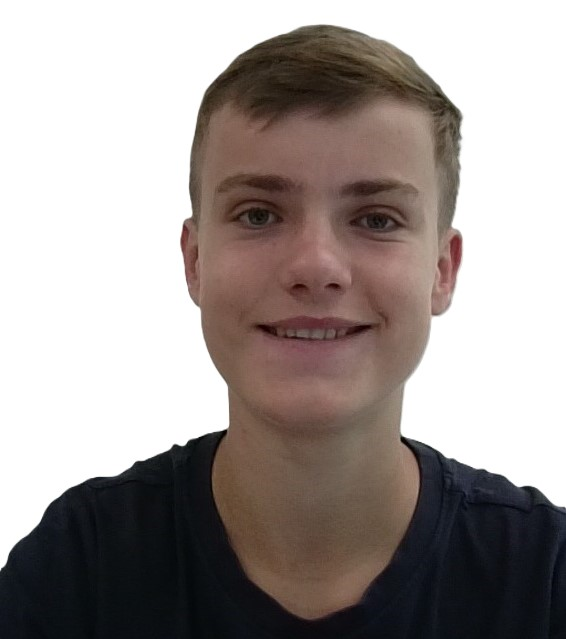
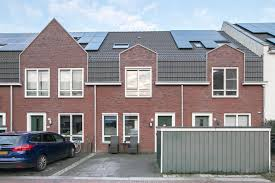

Een pagina over mijzelf.
|  |
Wie ik ben.Mijn naam is Jesper van Niekerk en ik ben vijftien jaar oud. Ik kom van de school Bernard Nieuwetijd College, daar heb ik vmbo-t gedaan. Momenteel volg ik de opleiding software developer. En daarmee wil ik later websites voor mensen maken. |
Mijn woonplaats.Momenteel woon ik in Amsterdam-Noord met mijn ouders en met mijn zusje. Ik ben ook in Amsterdam geboren. |
 |
Wat ik doe in mijn vrije tijd.Ik ben vaak aan het voetballen ook ben ik momenteel proeflessen aan het nemen voor basketbal. Ik vind het ook leuk om te gamen met mijn vrienden in mijn vrije tijd. |
Wat kan ik al.Ik ben goed in samenwerken en communiceren met andere mensen tijdens een opdracht. Ik ben goed in Wiskunde en Nederlands. Engels gaat ook wel alleen er is veel te verbeteren. Ik heb geen ervaring als software developer. Ik ben er tot in staat om veel aandacht aan een opdracht te geven. |
|
Mijn top 10 dingen waar ik slecht in ben/ slecht tegen kan. (er zit geen volgorde in).
1. Een top 10 invullen.
2. Mensen zonder geduld.
3. Mensen die te snel conclusies trekken.
4. Mensen die denken dat ze meer rechten hebben omdat ze iets kleins hebben dat anders is dan andere mensen.
5. Wanneer alles fout gaat doordat ik een stomme fout maak.
6. Wanneer andere mensen fouten maken waardoor ik geen of minder progressie kan maken in een opdracht.
7. Wanneer ik niet weet wat ik in mijn top 10 moet doen.
8. Ik heb een slecht kort termijn geheugen, ik ben dus slecht in talen leren al gaat Engels wel goed.
9. Ik ben niet iemand die graag alleen werkt.
10. Ik ben niet goed in geduldig zijn.